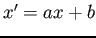

Siguiente: Realidad aumentada en el Subir: Método propuesto Anterior: Distancia entre vértices Índice General
Si ante estas situaciones, se reinicia el proceso de detección volviendo al inicio del diagrama de la Fig. 3.2, se deja de superponer el objeto virtual aunque el objeto aún permanezca en la escena. Aún más, si se pierde la detección del objeto entre un par de frames sucesivos, se produce un efecto de ``parpadeo'' del objeto virtual dibujado. Ambas situaciones claramente son indeseadas y para dar solución a las mismas, teniendo como fin brindar la mayor fluidez en el flujo de video resultante, se propone un proceso que restaura la última transformación válida sobre las últimas tres imágenes procesadas (Fig. 3.2). De lo mencionado, se deduce que ante la no detección de una transformación durante tres frames consecutivos, se deja de superponer el objeto.
En la Fig. 3.8 se esquematiza una secuencia de imágenes capturadas del flujo de video en diferentes de instantes de tiempo . El frame actual capturado se representa por y los previos mediante con . El buffer de transformaciones para la restauración está compuesto por los últimos tres frames como se indica en el gráfico. En este se puede observar que en el frame actual () y en el antepenúltimo (), no se han detectado las transformaciones y como resultado se restaura la transformación detectada en sobre el frame actual , ya que se ha detectado al menos una transformación en el buffer de transformaciones.
Para el caso donde no se detecta la transformación en ninguno de los últimos tres frames procesados, no se altera el flujo de video y se reinicia el procedimiento capturando una nueva imagen del flujo de video y comenzando asà un nuevo ciclo en el método.